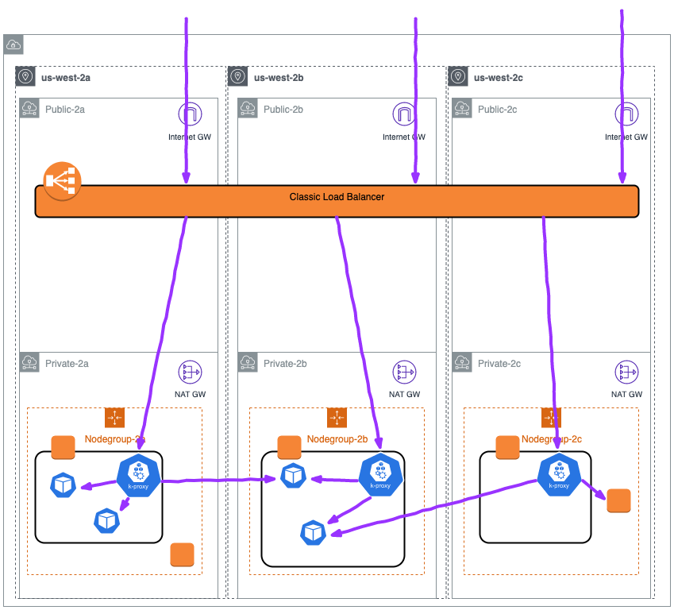
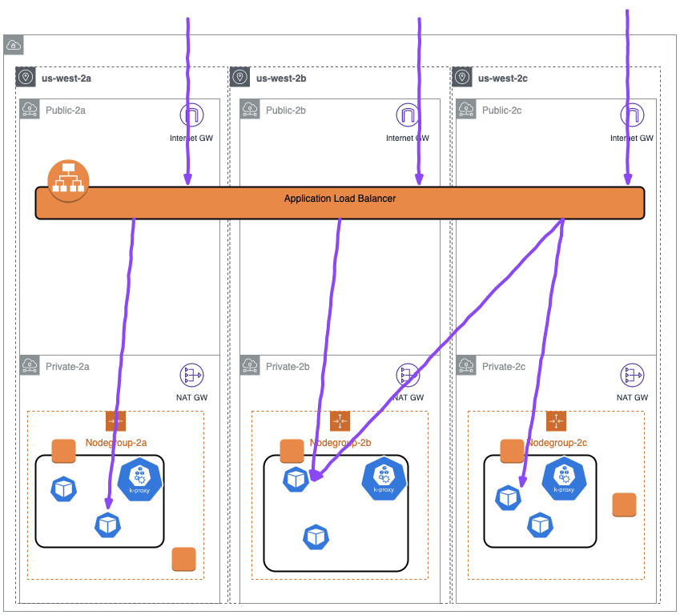

避免 Kubernetes 應用程式和 AWS 負載平衡器中的錯誤和超時¶
在建立必要的 Kubernetes 資源（Service、Deployment、Ingress 等）後，您的 pod 應該能夠通過 Elastic Load Balancer 接收來自客戶端的流量。但是，當您對應用程式或 Kubernetes 環境進行更改時，可能會產生錯誤、超時或連接重置。這些更改可能會觸發應用程式部署或縮放操作（手動或自動）。
不幸的是，即使您的應用程式沒有記錄任何問題，也可能會產生這些錯誤。這是因為控制您叢集中資源的 Kubernetes 系統可能運行速度比控制負載平衡器目標註冊和健康狀態的 AWS 系統更快。您的 Pod 也可能在應用程式準備好接收請求之前就開始接收流量。
讓我們回顧一下 pod 變為 Ready 狀態以及如何將流量路由到 pod 的過程。
Pod 就緒性¶
這個來自 2019 Kubecon 演講的圖表展示了 pod 變為 Ready 狀態並接收 LoadBalancer 服務流量的步驟：
 Ready? A Deep Dive into Pod Readiness Gates for Service Health... - Minhan Xia & Ping Zou
Ready? A Deep Dive into Pod Readiness Gates for Service Health... - Minhan Xia & Ping Zou
當 NodePort Service 的成員 pod 被創建時，Kubernetes 將經歷以下步驟：
- pod 在 Kubernetes 控制平面上被創建（即通過
kubectl命令或縮放操作）。 kube-scheduler調度 pod 並將其分配到叢集中的一個節點。- 在分配的節點上運行的 kubelet 將接收更新（通過
watch），並與其本地容器運行時通信以啟動 pod 中指定的容器。- 當容器已經啟動運行（並可選地通過
ReadinessProbes）時，kubelet 將通過向kube-apiserver發送更新來將 pod 狀態更新為Ready。
- 當容器已經啟動運行（並可選地通過
- Endpoint Controller 將接收更新（通過
watch），表示有一個新的Readypod 需要添加到服務的 Endpoints 列表中，並將 pod IP/Port 元組添加到適當的端點數組中。 kube-proxy接收更新（通過watch），表示有一個新的 IP/Port 需要添加到 Service 的 iptables 規則中。- 工作節點上的本地 iptables 規則將被更新，以添加 NodePort Service 的目標 pod。
Note
當使用 Ingress 資源和 Ingress Controller（如 AWS Load Balancer Controller）時，步驟 5 由相關控制器而不是 kube-proxy 處理。然後，該控制器將採取必要的配置步驟（如註冊/註銷目標到負載平衡器）以允許流量按預期流動。
當 pod 被終止或變為非就緒狀態時，會發生類似的過程。API 伺服器將從控制器、kubelet 或 kubectl 客戶端接收終止 pod 的更新。步驟 3-5 將繼續進行，但會從端點列表和 iptables 規則中刪除 Pod IP/元組，而不是插入。
對部署的影響¶
下圖顯示了應用程式部署觸發替換 pod 時採取的步驟：
 Ready? A Deep Dive into Pod Readiness Gates for Service Health... - Minhan Xia & Ping Zou
Ready? A Deep Dive into Pod Readiness Gates for Service Health... - Minhan Xia & Ping Zou
值得注意的是，第二個 Pod 將不會部署，直到第一個 pod 達到 "Ready" 狀態。前一節中的步驟 4 和 5 也將與上述部署操作並行發生。
這意味著，當部署控制器繼續處理下一個 pod 時，傳播新 pod 狀態的操作可能仍在進行中。由於此過程還終止了舊版本的 pod，這可能會導致 pod 已達到 Ready 狀態，但這些變更仍在傳播，而舊版本的 pod 已被終止的情況。
當與 AWS 等雲端提供商的負載平衡器一起工作時，這個問題會更加嚴重，因為上述描述的 Kubernetes 系統默認不考慮負載平衡器的註冊時間或健康檢查。這意味著部署更新可能完全循環經過 pod，但負載平衡器尚未完成執行健康檢查或註冊新 Pod，這可能會導致中斷。
當終止 pod 時也會出現類似的問題。根據負載平衡器的配置，pod 可能需要一到兩分鐘才能註銷並停止接受新請求。Kubernetes 不會延遲滾動部署以進行此註銷，這可能導致負載平衡器仍在向已被終止的目標 Pod IP/port 發送流量的狀態。
為了避免這些問題，我們可以添加配置以確保 Kubernetes 系統的操作更符合 AWS 負載平衡器的行為。
建議¶
使用 IP 目標類型負載平衡器¶
當創建 LoadBalancer 類型服務時，流量通過 Instance 目標類型 註冊發送到叢集中的任何節點。每個節點然後將流量從 NodePort 重定向到服務端點數組中的 Pod/IP 元組，該目標可能在另一個工作節點上運行。
Note
請記住，該數組應該只包含 "Ready" pod

這增加了請求的跳數，並增加了負載平衡器配置的複雜性。例如，如果上述負載平衡器配置了會話關聯性，則該關聯性只能在負載平衡器和後端節點之間保持（取決於關聯性配置）。
由於負載平衡器不是直接與後端 Pod 通信，因此很難控制流量流和時間與 Kubernetes 系統。
使用 AWS Load Balancer Controller 時，可以使用 IP 目標類型 直接將 Pod IP/Port 元組註冊到負載平衡器：

這簡化了從負載平衡器到目標 Pod 的流量路徑。這意味著當註冊新目標時，我們可以確定該目標是 "Ready" Pod IP 和端口，負載平衡器的健康檢查將直接命中 Pod，並且在查看 VPC 流量日誌或監控實用程式時，負載平衡器和 Pod 之間的流量將易於追蹤。
使用 IP 註冊還允許我們直接控制流量對後端 Pod 的時間和配置，而不是試圖通過 NodePort 規則來管理連接。
利用 Pod 就緒性閘道¶
Pod 就緒性閘道是必須滿足的其他要求，然後 Pod 才能達到 "Ready" 狀態。
就緒性閘道確保 Kubernetes 在部署期間創建新副本時不會 "太快"，並避免 Kubernetes 已完成部署但新 Pod 尚未完成註冊的情況。
要啟用這些，您需要：
- 部署最新版本的 AWS Load Balancer Controller（如果升級舊版本，請參考文檔)
- 將目標 pod 所在的命名空間標記為
elbv2.k8s.aws/pod-readiness-gate-inject: enabled，以自動注入 Pod 就緒性閘道。 - 要確保命名空間中的所有 pod 都獲得就緒性閘道配置，您需要在創建 pod 之前創建 Ingress 或 Service 並標記命名空間。
確保 Pod 在終止之前從負載平衡器註銷¶
當 pod 被終止時，pod 就緒性部分的步驟 4 和 5 會與容器進程接收終止信號的同時發生。這意味著，如果您的容器能夠快速關閉，它可能會比負載平衡器能夠註銷目標更快關閉。為了避免這種情況，請調整 Pod 規格：
- 添加
preStop生命週期鉤子以允許應用程式註銷並優雅地關閉連接。此鉤子在由於 API 請求或管理事件（如存活/啟動探測失敗、搶佔、資源競爭等）而終止容器之前立即調用。關鍵的是，此鉤子在發送終止信號之前被調用並允許完成，前提是寬限期足夠容納執行。
上面的簡單 sleep 命令可用於在 pod 被標記為 Terminating（並開始負載平衡器註銷）和發送終止信號之間引入短暫延遲。如果需要，此鉤子也可用於更高級的應用程式終止/關閉過程。
- 延長
terminationGracePeriodSeconds，以容納整個prestop執行時間以及您的應用程式關閉時所需的時間。在下面的示例中，寬限期延長到 200 秒，這允許整個sleep 180命令完成，然後再額外 20 秒，以確保我的應用程式可以優雅地關閉。
spec:
terminationGracePeriodSeconds: 200
containers:
- name: webapp
image: webapp-st:v1.3
[...]
lifecycle:
preStop:
exec:
command: ["/bin/sh", "-c", "sleep 180"]
確保 Pod 具有就緒性探測¶
在 Kubernetes 中創建 Pod 時，默認就緒性狀態為 "Ready"，但大多數應用程式需要一些時間才能初始化並準備好接收請求。您可以在 Pod 規格中定義 readinessProbe，使用 exec 命令或網路請求來確定應用程式是否已完成啟動並準備好接收流量。
使用定義了 readinessProbe 的 pod 以 "NotReady" 狀態啟動，只有當 readinessProbe 成功時才會變為 "Ready"。這可確保在應用程式完成啟動之前不會將其投入使用。
建議使用存活探測允許在進入損壞狀態時重新啟動應用程式，例如死鎖，但應該小心處理有狀態的應用程式，因為存活探測失敗將觸發應用程式重新啟動。啟動探測也可用於緩慢啟動的應用程式。
下面的探測使用 HTTP 探測對 port 80 進行檢查，以確定 Web 應用程式何時準備就緒（相同的探測配置也用於存活探測）：
[...]
ports:
- containerPort: 80
livenessProbe:
httpGet:
path: /
port: 80
failureThreshold: 1
periodSeconds: 10
initialDelaySeconds: 5
readinessProbe:
httpGet:
path: /
port: 80
periodSeconds: 5
[...]
配置 Pod 中斷預算¶
Pod 中斷預算 (PDB) 限制了複製應用程式的 Pod 在自願中斷期間同時處於停機狀態的數量。例如，基於法定人數的應用程式可能希望確保運行的副本數量永遠不會低於法定人數所需的數量。Web 前端可能希望確保提供負載的副本數量永遠不會低於總數的某個百分比。
PDB 將保護應用程式免受節點被排空或應用程式部署等影響。PDB 確保在採取這些操作時至少保持最小數量或百分比的 pod 可用。
Attention
PDB 不會保護應用程式免受不自願中斷的影響，如主機操作系統故障或網絡連接丟失。
下面的示例確保始終至少有 1 個帶有標籤 app: echoserver 的 Pod 可用。您可以為您的應用程式配置正確的副本數量或使用百分比：
apiVersion: policy/v1beta1
kind: PodDisruptionBudget
metadata:
name: echoserver-pdb
namespace: echoserver
spec:
minAvailable: 1
selector:
matchLabels:
app: echoserver
優雅處理終止信號¶
當 pod 被終止時，容器內運行的應用程式將接收兩個信號。第一個是 SIGTERM 信號，這是一個"禮貌"的請求，要求進程停止執行。此信號可以被阻塞或應用程式可以簡單地忽略它，因此在 terminationGracePeriodSeconds 過去後，應用程式將接收 SIGKILL 信號。SIGKILL 用於強制停止進程，它不能被阻塞、處理或忽略，因此始終是致命的。
容器運行時使用這些信號來觸發應用程式關閉。SIGTERM 信號還將在 preStop 鉤子執行之後發送。使用上述配置，preStop 鉤子將確保 pod 已從負載平衡器註銷，因此應用程式可以在收到 SIGTERM 信號時優雅地關閉任何剩餘的開放連接。
Note
在容器環境中處理信號可能很複雜，尤其是在使用應用程式入口點的"包裝腳本"時，因為該腳本將是 PID 1 並可能不會將信號轉發給您的應用程式。
小心註銷延遲¶
Elastic Load Balancing 停止向正在註銷的目標發送請求。默認情況下，Elastic Load Balancing 等待 300 秒才完成註銷過程，這可以幫助目標上的進行中請求完成。要更改 Elastic Load Balancing 等待的時間，請更新註銷延遲值。
正在註銷的目標的初始狀態為 draining。在註銷延遲過期後，註銷過程完成，目標的狀態變為 unused。如果目標是 Auto Scaling 組的一部分，它可以被終止並替換。
如果正在註銷的目標沒有進行中的請求和活動連接，Elastic Load Balancing 會立即完成註銷過程，而無需等待註銷延遲。
Attention
即使目標註銷已完成，目標的狀態也會顯示為 draining，直到註銷延遲超時過期。超時過期後，目標將轉換到 unused 狀態。
如果正在註銷的目標在註銷延遲過期之前終止連接，客戶端將收到 500 級錯誤響應。
可以使用 Ingress 資源上的註釋來配置此內容，使用 alb.ingress.kubernetes.io/target-group-attributes 註釋。示例：
apiVersion: networking.k8s.io/v1
kind: Ingress
metadata:
name: echoserver-ip
namespace: echoserver
annotations:
alb.ingress.kubernetes.io/scheme: internet-facing
alb.ingress.kubernetes.io/target-type: ip
alb.ingress.kubernetes.io/load-balancer-name: echoserver-ip
alb.ingress.kubernetes.io/target-group-attributes: deregistration_delay.timeout_seconds=30
spec:
ingressClassName: alb
rules:
- host: echoserver.example.com
http:
paths:
- path: /
pathType: Exact
backend:
service:
name: echoserver-service
port:
number: 8080